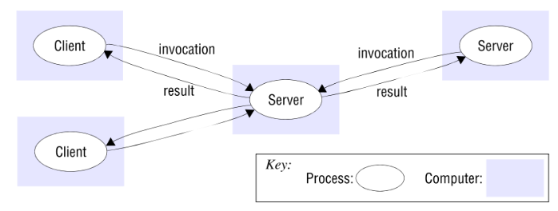
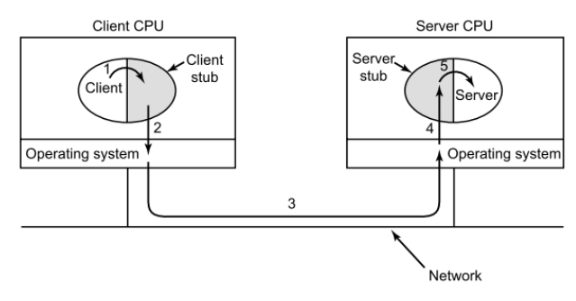
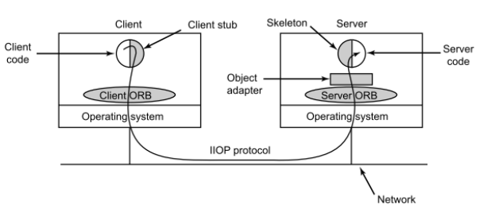
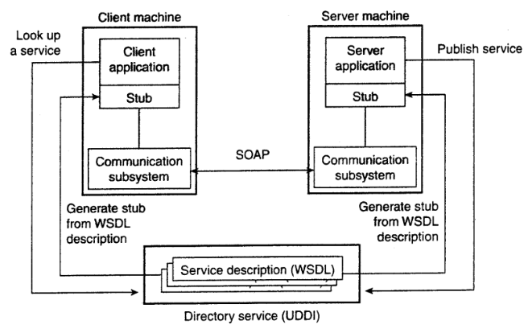

Arquitetura
- Arquitetura de um sistema é sua estrutura em termos dos componentes e seus relacionamentos.
- Objetivo: garantir que a estrutura satisfará as demandas presentes e futuras.
- Elementos de uma arquitetura:
- Entidades comunicantes (ex: processos).
- Paradigma de comunicação (ex: invocação remota).
- Funções e responsabilidades (cliente-servidor).
- Mapeamento (ex: mapemento de serviços e múltipos servidores).
Cliente-servidor
Duas arquiteturas representativas: cliente-servidor e peer-to-peer.
Cliente-servidor:
- Historicamente, uma das mais importantes e adotadas.
- Servidor: um processo implementando e disponibilizando um serviço específico.
- Cliente: um processo que requisita um serviço de um servidor através do envio de uma requisição e a espera de uma resposta.
- Potencialmente, clientes e servidores ficam em máquinas separadas.
- Servidores podem se tornar clientes de outros servidores.
- Abordagem centralizada.
Peer-to-peer

- Todos os processos (peers) possuem funções similares.
- Não existe uma distinção entre cliente e servidor.
- Oferecem a mesma interface para os outros projetos.
- Abordagem descentralizada.
- Maior escabilidade para compartilhamento de recursos.
- Volatilidade nos nós.
- Complexidade maior que a abordagem cliente-servidor.
Middleware
Um dos principais objetivos de SD é transformar um conjunto de nós fracamente acoplados e heterogêneos em um sistema coerente.
- Middleware:
- É uma camada de software em cima do sistema operacional.
- Provê estruturas de dados e operações que permitem processos/usuários operarem em conjunto de forma consistente
- Tanenbaum: É o S.O dos sistemas distribuídos. Não é necessariamente um S.O.
Remote Procedure Call (RPC)
- Chamada de procedimentos localizados em outras máquinas.
- Chamada remota assemelha-se a uma chamada local de procedimento.
- Alguns middleware são baseados nesta técnica.
- Cliente:
- Adota uma biblioteca de procedimento – Client stub, Server stub
- Client stub – representa o procedimento do servidor no espaço de endereçamento do cliente
- Servidor adota Server stub – transformar requisições remotas oriundas da rede em chamadas locais
- Marshaling – Empacotamento dos parâmetros em uma mensagem
- Unmarshaling – Desempacotamento dos parâmetros
- Usualmente, adota-se uma linguagem de definição de interface para geração dos stubs
Object-based middleware
- Baseado no paradigma orientado a objeto. exemplo: CORBA (Common Object Request Broker Architecture).
- Abordagem baseada em cliente-servidor:
- Processos nas máquinas clientes podem requisitar operações em objetos localizados em máquinas servidoras.
- Object Request Broker (ORB) – Intermédio na comunicação cliente-servidor:
- Abstrai todos os detalhes de baixo nível da comunicação (ex: localização do servidor).
- Comunicação entre ORBs – Internet InterORB Protocol.
- Adoção de uma Interface Definition Language (IDL) – Especificação das interfaces dos objetos (ex: métodos e parâmetros).
Publish/Subscribe

- Cada processo pode ser produtor e/ou consumidor de informação.
- Produtor faz o broadcast quando uma nova informação estiver disponível (publishing).
- Processos interessados em certas informações fazem o subscribe (inscrição) para os assuntos de interesse.
- Inscrição é feita através da comunicação com um processo daemon, o qual está localizado na mesma máquina que monitora as mensagens.
- Roteadores de informação (Information routers) – Ajudam na distribuição de mensagens em WANs e Internet
Web Services
- Um serviço disponibilizado via internet.
- Adoção de um conjunto de padrões.
- Simple Object Access Protocol (SOAP) - Troca de mensagens via uso de XML (tipicamente usando HTTP).
- Directory Service – guarda descrições de serviço utilizando o padrão UDDI (Universal, Description, Discovery and Integration).
- Serviços descritos através Web Services Definition Language (WSDL).